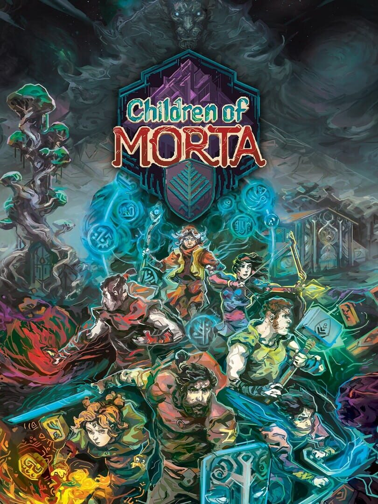

Children of Morta
Children of Morta
Details
|  | |
| Playtime | 45m 0s |
| Last Activity | 12/05/2021 19:05:37 |
| Added | 23/11/2021 11:42:06 |
| Modified | 19/02/2023 4:42:42 |
| Completion Status | Played |
| Library | Steam |
| Source | Steam |
| Platform | PC (Windows) |
| Release Date | 03/09/2019 |
| Community Score | 64 |
| Critic Score | 83 |
| User Score | |
| Genre | Adventure Indie Role-playing (RPG) |
| Developer | Dead Mage |
| Publisher | 11 bit studios |
| Feature | Co-Operative Multiplayer Single Player |
| Links | Steam Official Website Wikia GOG Wikipedia |
| Tag | [EMT] Logo Missing [EMT] Video Micro missing |
Description
FROSTPUNK 2 ANNOUNCED
https://store.steampowered.com/app/1601580/Frostpunk_2
About the Game
IT RUNS IN THE FAMILY
Children of Morta is an action RPG with a rogue-lite approach to character development, where you don’t play a single character - but a whole, extraordinary family of heroes. Hack’n’slash through hordes of enemies in procedurally generated dungeons, caves and lands and lead the family of Bergsons, with all their flaws and virtues, against the forthcoming Corruption.
FEATURES:

LOCAL CO-OP is already available in the game, so two players can become the Bergsons and fight the Corruption together. ONLINE CO-OP is still in development and will be released in a future update.
You can also use Steam's Remote Play Together feature. It lets you play local multiplayer games with Steam Friends online, even when the game doesn't natively support online play. Read more about it HERE.

GAMEPLAY
Gameplay-wise it's a unique mix of action-adventure RPG, rogue-lite and hack and slash game. By leveling up, you develop not only individual characters but also the entire family. There is no permadeath and you can change family members between the dungeon runs.

STORY
The story takes place in a distant land but copes with themes and emotions common to all of us: love and hope, longing and uncertainty, ultimately loss... and sacrifice we are willing to make to save the ones we care the most for. Ultimately, it's about a family of heroes standing against the encroaching darkness.

DUNGEON CRAWLING
All the dungeons in the game are procedurally generated, which means their layout is different with each adventure. There can be from two to four levels of each dungeon, with a unique boss fight at the end. You can always get back to the previous dungeons to get extra XP or finish all the side quests.

CHARACTERS & SKILLS
Ranged attacks, magic spells, blocks, stuns, healing, evasions and passive skills - it's all there for you to discover, unlock and upgrade. You can choose from seven different family members, each one having unique skill sets. The father, John - a protective warrior with a sword and shield. The elder daughter Linda - a precise archer. Kevin, a quiet fighter equipped with deadly daggers. Lucy - a lively and bold fire mage. Mark - a mindful martial arts fighter. Joey - who smashes his enemies with a sledgehammer. And the latest addition to the family - Apan, a mighty healer and a firm defender in one.

ART STYLE
A combination of hand-painted pixel art and frame-by-frame animations partnered with modern lighting techniques come to life to create the beautifully dangerous world of Children of Morta!

Guided by the ancient Development Roadmap, we are now adding another great DLC for you all, available at a great price of $4.99 and its equivalents!
Ancient Spirits introduces a number of things:
- New playable character Yajouj’Majouj ready to have your skills tested within the Family Trials mode. Yajouj’Majouj, unlike the Bergsons, has two forms, and is able to turn from one to the other at your will to create a unique fighting style - combining attacks from both forms enables you to unleash truly deadly strikes!
- New character masks for each character to customize their look to your liking.
- 5 new relics, 5 new charms and 5 new graces to provide you with new powers to spice up your existing fighting style!
Here's the current state of our journey along the Development Roadmap:
1. Shrine of Challenge - Visited on Feb 2nd, 2020.
New difficulty settings and a pack of new, shiny items.
2. Setting Sun Inn - Visited on May 7th, 2020.
New Game+ Mode added to the game.
3. Bergsons' House - Visited on June 24th, 2020.
A new playable character: Apan.
4. A Treasure! - Visited on August 24th, 2020.
New items pack.
5. Paws and Claws: Charity DLC - Visited on August 24th, 2020.
Animal Shelter System added to the game along with new mechanics and events. 100% of our proceeds from this DLC go to the HSI charity!
6. Temple of The Endless - Visited on April the 7th. 2021.
A major update adding a brand-new mode called Family Trials to the game.
7. Ancient Spirits - Visited on October 7th, 2021.
New playable character and additional goodies!
8. Fellowship Sanctuary
Online co-op functionality to be added in the future (we're at its Early Alpha stage already!)